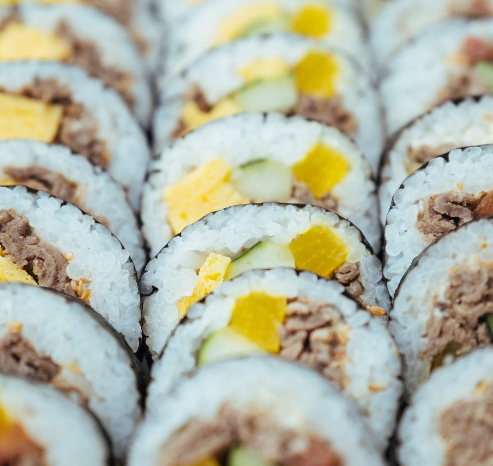

Традиции
Азия славится своими древними и уникальными традициями. Например, в Японии почитают чайную церемонию, превращающую чаепитие в глубокий философский ритуал. В Индии большое значение имеют религиозные фестивали, такие как Дивали — праздник огней, символизирующий победу добра над злом, и Холи — фестиваль красок, отмечаемый с танцами и яркими красками. Китайская культура известна своим лунным календарём и традициями, такими как Китайский Новый год и фестиваль середины осени, когда проходят торжественные обряды в честь предков.
АЗИЯ
Азия — это уникальное сочетание древних традиций и ультрасовременных технологий. Каждая страна здесь раскрывает перед путешественниками разнообразие культур, архитектуры, кухонь и природных пейзажей. От ярких огней Сеула и Токио до тихих горных монастырей в Гималаях, Азия предлагает бесчисленные возможности для захватывающих приключений и полного расслабления.
От колоритных рынков Таиланда до древних храмов Японии и захватывающих дух пляжей Филиппин – Азия предлагает бесконечное разнообразие мест и уникальный отдых для каждого. Любители природы смогут насладиться удивительными пейзажами, будь то террасы рисовых полей Бали или величественные горы Непала. Городские исследователи откроют для себя насыщенную культуру и необычную архитектуру в мегаполисах, таких как Сингапур и Гонконг.

Гастрономия
Азиатская кухня представляет собой удивительное многообразие вкусов и техник. Китайская кухня, одна из старейших в мире, включает в себя более 20 региональных кухонь, от кантонских блюд, таких как димсам, до острой сычуаньской еды. Японская кухня известна суши и сашими, а также искусством приготовления рамена и темпуры. Индийская кухня, богатая специями, представлена карри, самосами и бирьяни, которые варьируются в зависимости от региона: от вегетарианских блюд юга до мясных деликатесов севера. В Таиланде гастрономия сочетает сладкий, острый, соленый и кислый вкусы в таких блюдах, как том-ям и пад-тай, а корейская кухня известна острым кимчи и мясом барбекю, приготовленным на гриле.
Наши операторы доступны 24/7:
+442038681146 (WhatsApp)
EMAIL: info@limotis.com
ИССЛЕДУЙТЕ СТРАНЫ АЗИИ
ВМЕСТЕ С НАМИ
Оман
Оман — это жемчужина Аравийского полуострова, которая сочетает древние традиции с современным комфортом. Здесь можно увидеть завораживающие пустыни с мягкими дюнами, оазисы с изумрудными озёрами и величественные горы. Столица Маскат поражает своими мечетями, красочными рынками и прибрежными крепостями. Но главное в Омане — это уникальное гостеприимство и культура. Здесь каждый путешественник может погрузиться в атмосферу восточных сказок, наслаждаясь свежими финиками, ароматным кофе и тёплым приемом местных жителей.


ОАЭ
Объединенные Арабские Эмираты — это страна, где будущее встречается с традициями. Грандиозные небоскребы и футуристические технологии соседствуют с величественными пустынями и древними рынками. В Дубае вас ждут уникальные впечатления: от самого высокого здания мира Бурдж-Халифа до искусственных островов, созданных прямо в море. Абу-Даби поражает спокойной роскошью и культурным наследием, включая Лувр Абу-Даби и исторические форты. Эмираты — это место, где каждый найдет что-то для себя, будь то отдых на песчаных пляжах, сафари по дюнам или вечер в роскошном ресторане с видом на лазурный Персидский залив.
Катар
Катар — удивительное сочетание древних традиций и современного блеска, расположенное на берегу Персидского залива. Этот маленький, но очень богатый эмират привлекает своим контрастом: здесь можно увидеть величественные небоскребы Дохи, сверкающие на фоне пустынного ландшафта, и погрузиться в колорит Востока на рынках и в музеях исламского искусства. Туристов ждет уникальная культура, теплое гостеприимство, захватывающие виды и разнообразие развлечений — от песчаных дюн до роскошных пляжей и ресторанов с кухней на любой вкус. Катар — место, где прошлое и будущее встречаются, создавая неповторимую атмосферу.


Южная Корея
Южная Корея — это страна, где современность и традиции сливаются в уникальной гармонии. Здесь высокотехнологичные города, такие как Сеул, поражают футуристическими небоскребами и передовыми разработками, а рядом вы найдете старинные храмы и тихие сады, отражающие глубокие корейские традиции. Южная Корея славится своей богатой культурой: от древних боевых искусств и чайных церемоний до современной поп-культуры, которая завоевала мир с помощью K-pop и кинематографа. Добавьте к этому потрясающие природные красоты, такие как остров Чеджу и национальные парки, и Южная Корея станет для вас местом, которое нельзя забыть.
Япония
Япония — страна, где будущее и древние традиции живут бок о бок, создавая уникальную атмосферу. Ультрасовременные мегаполисы с небоскребами и неоновыми огнями плавно сменяются тихими храмами, древними садами и традиционными чайными домиками. Япония — это Токио с его бурной энергетикой и бесконечными инновациями, Киото с его старинными храмами и изысканной культурой, живописная гора Фудзи, которая стала символом страны. Кроме того, японская кухня — от суши до рамена — покорила мир, а японская вежливость и внимание к деталям создают атмосферу гостеприимства и комфорта, привлекая путешественников со всего мира.

Мальдивы
Мальдивы — это настоящий рай на Земле, где белоснежные пляжи встречаются с кристально чистой водой и потрясающими коралловыми рифами. Этот архипелаг, состоящий из более чем 1000 островов, приглашает забыть о суете и окунуться в мир покоя и красоты. Живописные бунгало на воде, яркий подводный мир с сотнями видов рыб и романтические закаты делают Мальдивы идеальным местом для отдыха и расслабления. Будь то подводное плавание, прогулки по песчаным берегам или наслаждение коктейлем на фоне бирюзовой лагуны — каждая минута здесь кажется волшебной.